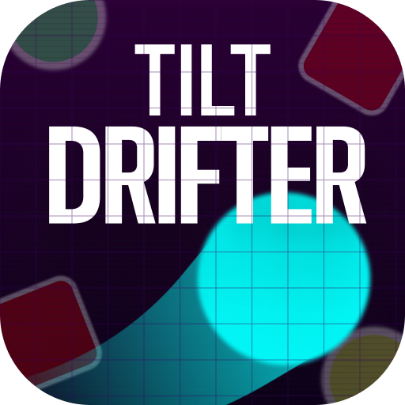
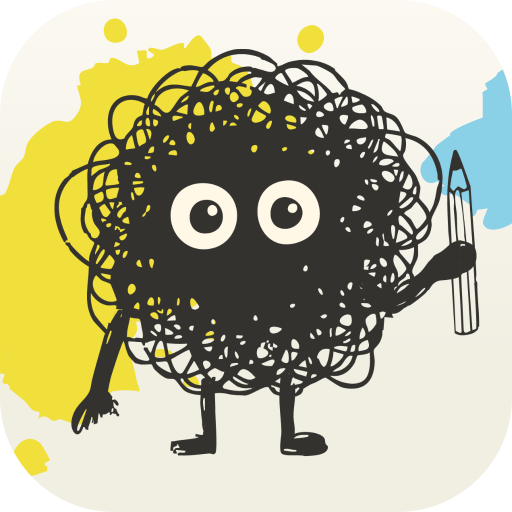

First off, to answer the question on your mind: yes, I used AI to help build this portfolio.
For a long time, I’ve had ideas that usually would have stayed stuck in my head or trapped in a mockup file because I didn't have a traditional engineering background to code them from scratch. AI tools haven't replaced my creative vision—they’ve simply given me the vehicle to bring my ideas to life from start to finish.
I don’t believe AI should ever replace the human element. An individual’s true value today isn't just knowing how to code—it’s their curiosity, taste, and ability to think up and articulate creative solutions to real problems.
How I use AI: at work
In my day-to-day UX work, I use AI to compress discovery time and test complex ideas fast.
Rapid prototyping & stress testing
While working on a complex rules engine with nearly endless logic scenarios, I led a two-and-a-half-day discovery sprint with domain experts. As we talked through the problem, I used AI to prompt and build a working prototype in real time. We immediately stress-tested it against complex scenarios to catch missing functionality in days rather than waiting weeks or months. From there, I took those insights and refined them into fully documented Figma designs and design system specs.
Team culture & physical products
I’ve also used AI to create memorable team-building experiences—from designing a custom, playable card game featuring members of our department to producing an animated series. AI handled the heavy lifting, allowing me to focus on the strategy, storytelling, and bringing people together.
How I use AI: personal projects

Tilt DrifterAn iOS game
AI acts as a multiplier for my curiosity. It’s helped me bridge the gap between initial concept and real-world execution, including publishing two apps to the App Store. The ideas, visual design, and user experience were mine—AI just helped me overcome technical hurdles that used to stop projects in their tracks.

SkwiglRive animations at its core
Along the way, it’s accelerated my hands-on learning. While building my app Skwigl , for instance, I learned how to integrate and trigger interactive Rive animations—turning a tool I had only ever played around with into a core feature of a live product.
The bottom line
At the end of the day, AI hasn't changed why I design—it's expanded what I'm capable of building. It allows me to move faster from problem to prototype, test ideas in the wild, and collaborate more effectively with engineering and product teams. It turns “what if” into something we can actually touch, test, and ship.
Hello! My name is Danny. I’m a UX designer who values genuine creativity and looks for any opportunity to build something truly unique. My approach blends human-centered UX craft with modern AI prototyping tools—allowing me to take complex product ideas from initial user flows and wireframes to fully interactive, testable prototypes.
What energizes me most is people. Working with cross-functional teams, learning from user research, and designing clear, intuitive solutions that make a real impact. I believe the best products come from continuous curiosity, sharp problem-solving, and close collaboration.
When I take off the designer hat, I’m usually making music on guitar, tinkering with side projects, or spending time with my wife and kids.